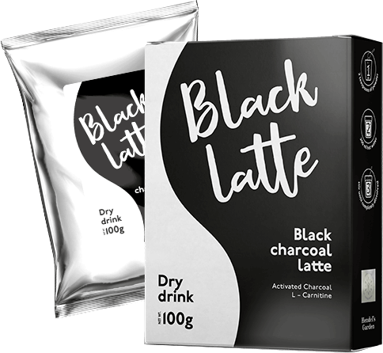

- διεγείρει τον μεταβολισμό
- καίει το λίπος
- καταστέλλει την όρεξη
- εξαλείφει τα περιττά υγρά και τις τοξίνες από το σώμα
- ενισχύει την ενέργεια
Οι δίαιτες είναι επιβλαβείς για την υγεία σας!
Υπάρχει μια ασφαλής λύση για να χάσετε βάρος
Αρχικά προβλήθηκε στο

Δρ. Oz:
Πρόσφατες μελέτες έδειξαν ότι το 71% του παγκόσμιου πληθυσμού πάσχει από υπερβολικό βάρος, και αυτό το ποσοστό συνεχώς αυξάνεται. Το πρόβλημα έχει πολλές αιτίες - από τον υποσιτισμό έως το συνεχές άγχος, αλλά δεν υπάρχουν πολλές λύσεις ή, τουλάχιστον, δεν είναι πραγματικά αποτελεσματικές λύσεις.
Κάλεσα έναν διατροφολόγο, τη δρ. Catherine Frayn στην εκπομπή μας, για να μας βοηθήσει να αντιμετωπίσουμε αυτό το πρόβλημα. Θα μας πει ποιες μέθοδοι αδυνατίσματος μπορούν να είναι θανατηφόρες και ποιες είναι πραγματικά αποτελεσματικές ή, ακόμη και χρήσιμες.
Dr. Oz:
Catherine, παρακαλούμε να μας πείτε για τις πιο δημοφιλείς μεθόδους αδυνατίσματος. Είναι όλα αποτελεσματικά και ασφαλή;
CF:
Σήμερα υπάρχουν πολλές δημοφιλείς δίαιτες, αλλά δεν καταλαβαίνουν όλοι ότι κάθε σώμα είναι μοναδικό και χρειάζεται μια ατομική προσέγγιση. Αυτός είναι ο λόγος για τον οποίο θα πρέπει πάντα να επιλέξετε οποιοδήποτε πρόγραμμα διατροφής ακολουθώντας τις συμβουλές ενός ειδικού. Για μερικούς ανθρώπους, οι δίαιτες αντενδείκνυνται, καθώς μπορείτε να καταστρέψετε την υγεία σας προσπαθώντας να χάσετε βάρος.
Σήμερα υπάρχουν πολλές δημοφιλείς δίαιτες, αλλά δεν καταλαβαίνουν όλοι ότι κάθε σώμα είναι μοναδικό και χρειάζεται μια ατομική προσέγγιση. Αυτός είναι ο λόγος για τον οποίο θα πρέπει πάντα να επιλέξετε ένα πρόγραμμα διατροφής ακλουθώντας τη συμβουλή ενός ειδικού .
Dr. Oz:
Μπορείτε να μας δώσετε κάποια παραδείγματα δίαιτας που είχαν ανεπιτυχείς συνέπειες;
CF:
Ναι, υπάρχουν πολλά! Πρόσφατα αντιμετώπισα έναν ασθενή που απέκτησε έλκος μετά από μια δίαιτα με βάση τη σοκολάτα. Μια άλλη ασθενής, αντίθετα, υπέστη μια σοβαρή μορφή ανορεξίας μετά την απόπειρα να δοκιμάσει δεκάδες διαφορετικές δίαιτες. Μπορώ να παρουσιάσω γεγονότα ακόμα και για μια θανατηφόρα υπόθεση.
Δεν θέλω να τρομάξω κανέναν, προσπαθώ μόνο να προειδοποιήσω τους ανθρώπους για τις σοβαρές συνέπειες που μπορεί να προκύψουν από μια ακατάλληλη μέθοδο απώλειας βάρους. Στην τελική, υπάρχουν τώρα πολύ φθηνότερες και αποτελεσματικότερες μέθοδοι αδυνατίσματος.
Dr. Oz:
Τι εννοείτε με αυτό;
CF:
Ενα ροφημα καφε που περιεχει μονο φυσικα συστατικα που επιτρεπουν στο σωμα να χασει βαρος απο μονο του .
Dr. Oz:
Πώς γίνεται αυτό; Παρακαλώ, πείτε μας περισσότερα.
CF:
Στο παρελθόν, όλοι οι τύποι κοκτέιλ και χαπιών διατροφής περιείχαν επιθετικές χημικές ουσίες. Οι άνθρωποι κατέστρεψαν κυριολεκτικά το σώμα τους σε μια προσπάθεια να έχουν ένα λεπτό σώμα. Αλλά τα πράγματα άλλαξαν δραματικά. Τα φυσικά συστατικά μπορούν να είναι πολύ πιο αποτελεσματικά και ο σωστός συνδυασμός τους ενισχύει ακόμη περισσότερο τη δράση τους.
Dr. Oz:
Συνίσταται να πίνετε το προϊόν 2-3 φορές την ημέρα σε αντικατάσταση εκείνων των ανθυγιεινών σνακ που μας αρέσουν τόσο πολύ.
CF:
Σε κάθε περίπτωση, δεν είναι δυνατό να βλάψει την υγεία σας αυτό το ρόφημα. Το περιέχει τα πιο ωφέλιμα συστατικά: μαλτοδεξτρίνη, απομονωμένη πρωτεΐνη σόγιας,, ίνες βρώμης και σκόνη καφέ. Συνιστάται να πίνετε το προϊόν 2-3 φορές την ημέρα σε αντικατάσταση εκείνων των ανθυγιεινών σνακ που μας αρέσουν τόσο πολύ.. Θα νιώθετε χορτάτοι για μερικές ώρες, λαμβάνοντας ουσιαστικά ένα ελάχιστο επίπεδο θερμίδων.
Μετά την πρώτη λήψη, τα ενεργά συστατικά του προϊόντος αρχίζουν να καίνε το υποδόριο λίπος. Οι μεταβολικές διαδικασίες ενισχύονται και θα έχετε πολλή ενέργεια. Θα παρατηρήσετε τον εαυτό σας πώς θα αρχίσετε να χάνετε βάρος κάθε μέρα.


Dr. Oz:
CF:
Και δύσκολα θα το βρείτε εκεί. Το πωλείται μόνο στον επίσημο ιστότοπο του κατασκευαστή, γεγονός που μειώνει τον κίνδυνο αγοράς ενός παραποιημένου προϊόντος. Επιπλέον, δίνει σε όλους την ευκαιρία να το αγοράσουν σε καλή τιμή, χωρίς μεσάζοντες. Για παράδειγμα, αυτή τη στιγμή ο ιστότοπος προσφέρει έκπτωση 50%.
Dr. Oz:

Πιστεύω ότι πολλοί άνθρωποι θα σκεφτούν σχετικά με το και θα σταματήσουν να βασανίζονται με άκαμπτες και ανθυγιεινές διατροφές.
Dr. Oz:
ΠΑΡΑΓΓΕΛΙΑ ΤΩΡΑΕΙΔΙΚΑ ΑΡΘΡΑ ΤΟΥ DR. OZ
-

Christina Aguilera, τραγουδίστρια
"Δεν έχω προσπαθήσει ποτέ να κάνω δίαιτα, γιατί απλά δεν έχω τη θέληση. Πάω στο γυμναστήριο, αλλά με την άσκηση μπορείς να χάσεις 5 κιλά το πολύ. Βρήκα λοιπόν το κι άρχισα να το πίνω. Πριν να το πάρω είδηση, είχα χάσει ήδη 20 κιλά. Είναι εξαιρετικός λιποδιαλύτης, αλλά το σημαντικότερο είναι ότι τα χαμένα κιλά δεν επανέρχονται. Είμαι πολύ χαρούμενη."
-
"Να χάνεις και να παίρνεις κιλά για συγκεκριμένους ρόλους δεν είναι και τόσο εύκολο όσο φαίνεται. Μετά από το Ημερολόγιο της Μπρίτζετ Τζόουνς δεν μπορούσα να χάσω βάρος για τουλάχιστον ένα χρόνο. Ο μεταβολισμός μου είχε διαταραχθεί και δεν με βοηθούσε τίποτα. Είμαι πολύ χαρούμενη που βρήκα το . Χάρη σε αυτό το νόστιμο ρόφημα έχασα βάρος σε μόλις 2 μήνες. Πλέον κάνω ένα πρόγραμμα κάθε 6 μήνες. Είμαι πολύ ικανοποιημένη."
ΣΧΟΛΙΑ ΧΡΗΣΤΩΝ
Είναι πραγματικά δυνατό να χάσετε βάρος με αυτόν τον τρόπο; Έχω κάνει δίαιτα για περισσότερο από 1 χρόνο, αλλά εξακολουθώ να μην βλέπω αποτελέσματα. Πιθανότατα θα προσπαθήσω το
Συνειδητοποίησα εδώ και πολύ καιρό ότι οι ασκήσεις στο γυμναστήριο δεν αποφέρουν σημαντικά αποτελέσματα αν δεν συνδυαστούν με δίαιτα. Για μένα, ο συνδυασμός αυτών των δύο δραστηριοτήτων είναι σχεδόν αδύνατος... Το είναι η τέλεια λύση. Με αυτό το προϊόν έχασα 21 κιλά σε μόλις 2 μήνες. Στη συνέχεια πήγα στο γυμναστήριο και τώρα το σώμα μου είναι απλά τέλειο!
Για να χάσετε βάρος πρέπει να χτυπιέστε στο γυμναστήριο για αρκετές ώρες! Έχασα 10 κιλά σε 6 μήνες.
Για μένα το πιο δύσκολο πράγμα είναι να μην ξαναπαίρνω όλα τα χαμένα κιλά. Είχα καταφέρει να χάσω 8 κιλά, αλλά τα ξαναπήρα σε 6 μήνες.
ΟΥΑΟΥ! Θέλω να το δοκιμάσω κι εγώ!
Έκανα δίαιτα για ένα μήνα και κατάφερα να χάσω 7 κιλά. Είναι πολλά για μένα. Το βάρος είναι ακόμα σταθερό αλλά έχω προβλήματα στο στομάχι (ίσως είναι συνέπεια της δίαιτας, ποιος ξέρει...
Λατρεύω το είναι το ρόφημά μου. Αντικατέστησα τον καφέ και το τσάι, καθαρίζει απολύτως το σώμα και είναι υπέροχο!
Ακούστε κορίτσια μου, για να χάσετε βάρος πρέπει να τρώτε λιγότερο!
Μόλις παρέγγειλα 3 πακέτα. Αυτήν την στιγμή, στην ιστοσελίδα υπάρχουν μεγάλες εκπτώσεις!
Γιατί μερικοί άνθρωποι τρώνε πολύ και παραμένουν αδύνατοι, ενώ άλλοι, που αποφεύγουν να τρώνε πολύ και είναι πάντα σε δίαιτα, είναι καταδικασμένοι να ταλαιπωρούνται από το υπερβολικό βάρος;
Όλα εξαρτώνται από το μεταβολισμό σας: εάν είναι αργός, θα πάρετε κιλά ούτως ή άλλως. Το βοηθάει στην ενίσχυση του μεταβολισμού. Χάρη σ' αυτό το σώμα σίγουρα θα απαλλαγεί από τα επιπλέον κιλά. Πολύ χρήσιμη θεραπεία.